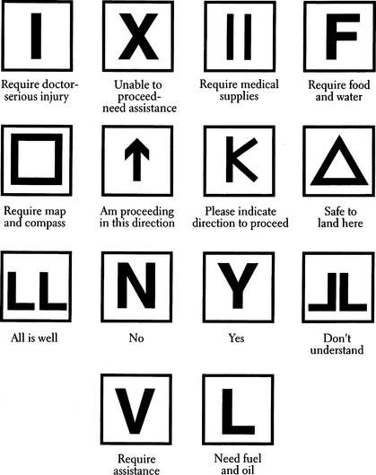
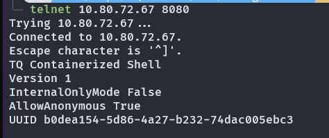

Solutions
We pride ourselves on offering a wide range of solutions to meet your needs. Whether you're looking for a
networking solution, a security solution, or a gardening solution, we've got you covered.

Signalling
Our signalling solution is designed to help you manage your network traffic efficiently and effectively. With
our cutting-edge technology, you can ensure that your data gets where it needs to go, when it needs to get
there.
Pricing
Contact Sales
BitSplitter Vulnerability Detector
Our vulnerability detector solution is designed to help you identify and mitigate security risks in your
network. With our advanced scanning technology, you can rest assured that your data is safe and secure.
You simply upload a compiled binary, answer some questions, and we check it against a database of known
vulnerable file signatures, searching for bad practices, potential buffer overflows, or the usage of C.
You may try our live demo for free!
Pricing
Live Demo
Tree Trimming
Our tree trimming solution is designed to help you keep your garden looking its best. With our expert
arborists and state-of-the-art equipment, you can ensure that your trees are healthy, vibrant, and beautiful.
We offer an on-call service for all your gardening needs, with response times as low as 30 minutes.
Pricing
Contact Sales

TQ Containerized Shell
SSH can be a mess to set up. With our TQ Containerized Shell, you can easily deploy a secure shell environment
which restricts users to containerized environments with specific permissions in a limited shell. This is perfect
for high security environments, or exposing certain tools to remote users without giving them full access to your
system.
This solution is deprecated and not for sale. Existing customers, contact support IMMEDIATELY.
Jankbox Music Streaming
Our music streaming solution is a simple WebJukebox(tm) that allows you to stream music over the web! With our
cutting-edge PHP technology, you can enjoy your favorite tunes from anywhere in the world.
You can try our live demo for free!
Pricing
Live Demo
Spanning Tree Screensaver
Our screensaver solution is designed to help you relax and unwind. With our beautiful tree-themed screensavers,
you can turn your computer into a peaceful oasis of tranquility.
You can download our screensaver for free! Available for Windows 7, 8, 10, and 11.
Written in C for maximum performance!
Free Download
Contact Support